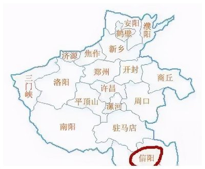
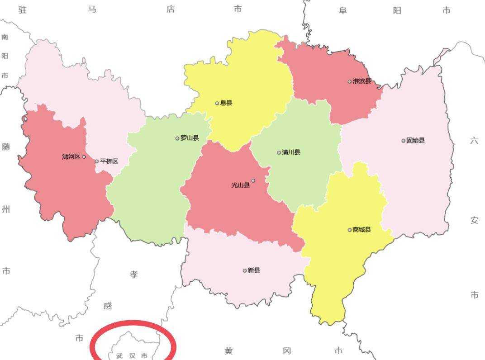

|  |  |
信阳位于河南省最南部，淮河上游，位于地处东经114°06′，北纬31°125′，地势南高北低。西部和南部为桐柏山、大别山，面积近7000平方公里，占全市总面积的37.1%，是长江淮河两大流域的分水岭。中部是丘陵岗地，合肥-潢川盆地西半部分，海拔50-100米，面积7000多平方公里，占全市总面积的38.5%。此区梯田层层，河渠纵横，塘堰密布，水田如网。北部是平原和洼地，面积4000多平方公里，占全市总面积的24.6%。 信阳市地理位置优越，交通便利，是连接南北的重要节点。京广、京九铁路和106、107国道以及京珠高速公路纵贯南北，宁西铁路、312国道和即将开通的信叶高速公路横穿东西，在境内形成四个双十字和两个区域交通枢纽——信阳市和潢川县，使信阳成为“立中原而通八方，居腹地而达九州”的交通要城。 信阳位于河南省南部，与湖北省接壤，距离武汉约200多公里。由于地理位置相近，信阳与武汉之间的交通非常便利，开车大约两三个小时即可到达，乘坐高铁则只需四五十分钟。（这也是我到华科来上学的重要原因之一） |
|